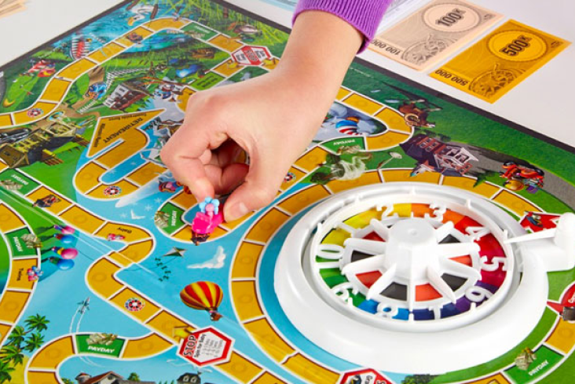

Instructor: Dan Taeyoung
dan@dantaeyoung.com | dan.taeyoung@cornell.edu
Cornell AAP, Summer 2024
Tuesdays & Thursdays, 2:00 - 4:30 PM
26 Broadway, 20th Floor

What are the collective practices with which we imagine a shared future?
You are tasked with becoming a player
in an experimental 8-person
game.
Shape the terms of the collective, including what its rules are.
Create web-based tools that shape how you understand each other.
Find forms of play that allow convivial cooperation.
Together, we will create a convivial game: a relational practice
around collectively stewarding a present and future world.
Add more here!